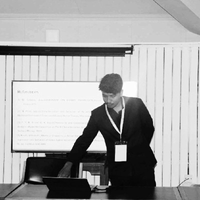

Researcher · Writer · Development Practitioner
Working where energy systems meet climate policy and development practice.
I'm Ashutosh Dev — an engineer-turned-researcher focused on energy, climate, and development across South Asia and the Pacific. From carbon-market MRV frameworks in Nepal to renewable energy systems modelling in New Zealand, I turn complex technical questions into evidence that decision-makers can actually use. Currently an MSc Renewable Energy Systems candidate and New Zealand Award Scholar at Victoria University of Wellington.

01 — Practice
Selected Consultation Work
Reports, field assessments, and analytical projects. Each card links to the report or an interactive output.
Loading consulting work…
02 — Research
Academic Publications
Peer-reviewed work, updated automatically from Google Scholar. Scroll the gallery, or open the full bibliography below.
Loading publications…
Full bibliography (BibBase · publications.bib)
03 — Commentary
Selected Op-Eds & Articles
Published commentary and essays, filed under four topics. Each topic has its own archive page.
Loading articles…
04 — Newsletter
Latest from Substack
Pulled automatically from ashutoshdev.substack.com — nothing to maintain here.
Loading posts…